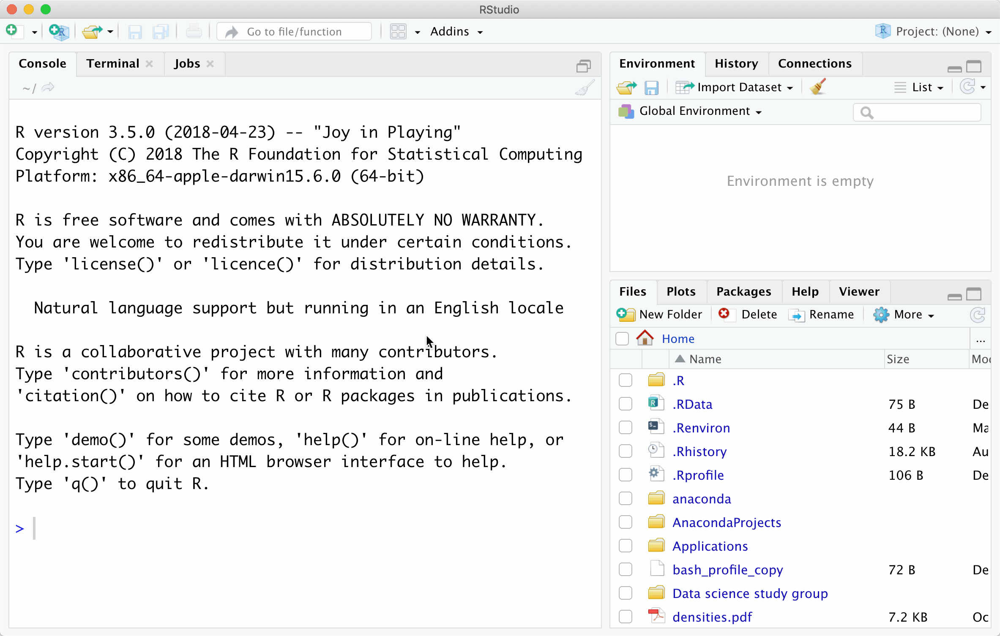
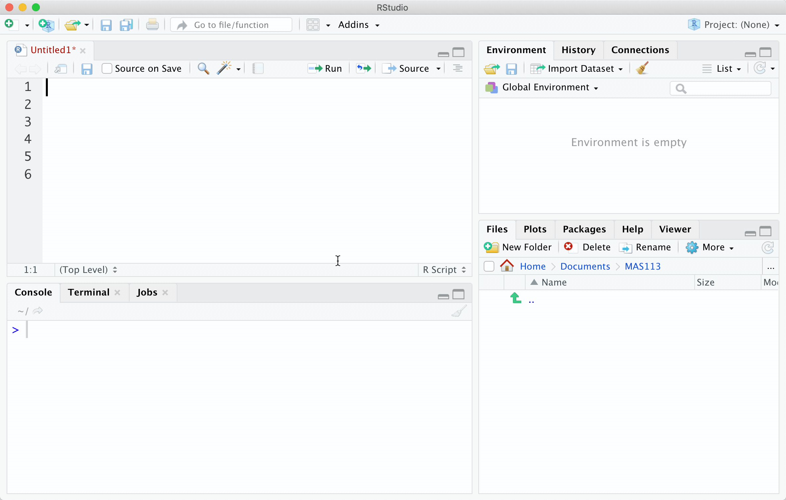

Section 7 Scripts
We’re reaching the point of wanting to use multiple commands in one go, and typing commands directly into the command prompt won’t be very convenient:
- it will be difficult to save your work
- it’s awkward if you make any mistakes
A more convenient way to work with R is to use scripts. A script file is a list of commands, that is easier to edit, save, and run.
7.1 Creating a new script
You can either select File > New File > R Script from the menu bar, or you can click on the icon in the top left corner and select R script. A new blank window will appear: this is your script window, where you can now enter commands.
7.2 Entering and running commands
You can type R commands in to your script window, as you did in the console, but when you press return, nothing will happen.
- To get R to run a single line, click on that line so that the cursor is on that line, then click on Run at the top of the script window.
- To get R to run multiple lines at once, highlight all the lines with the mouse, then click on Run.
- To see what value a particular variable is, after you have run the line in which the variable is defined, highlight the variable name only, and then click on Run.
Output will appear in the Console window, as before.

7.3 Adding comments and sections in scripts
Use the # symbol to start a ‘comment line’: any text on that line will be
ignored by R. Adding comments to your script can make it a little easier to read. You can also make
a ‘section’ by adding four minus signs after your comment. These sections can be
‘collapsed’ and expanded again in RStudio, by clicking on the little arrow next to the
line number.
From now on, put all your solutions to the exercises in a script, and start each section with a comment giving the exercise number

7.4 Line breaks in scripts
If we use a function with several arguments, and some of the arguments are quite long, it may be easier to read if we use a new line for each argument. The previous line must end with a comma , and then R will understand that the function continues on to the next line. For example,
sample(1:6, size = 6, replace = TRUE)can be written as
sample(1:6,
size = 6,
replace = TRUE)7.5 Saving a script
Go to File > Save As.. to save your script.
::: {.exercise} Working with scripts.
- First, outside of RStudio, create a new folder with this module code on your computer (use your U: drive if you are on the university network).
- Create a new script file
- Copy and paste these commands into the script
x <- sample(2 * 1:10, size = 1)
y <- sample(2 * 1:10, size = 1)
x * y- Run these three commands in the script window.
- Without typing any more commands into the script or console windows, find out the values of
xandy(highlight something appropriate and click on the run button.) - Save your script in your folder.
:::